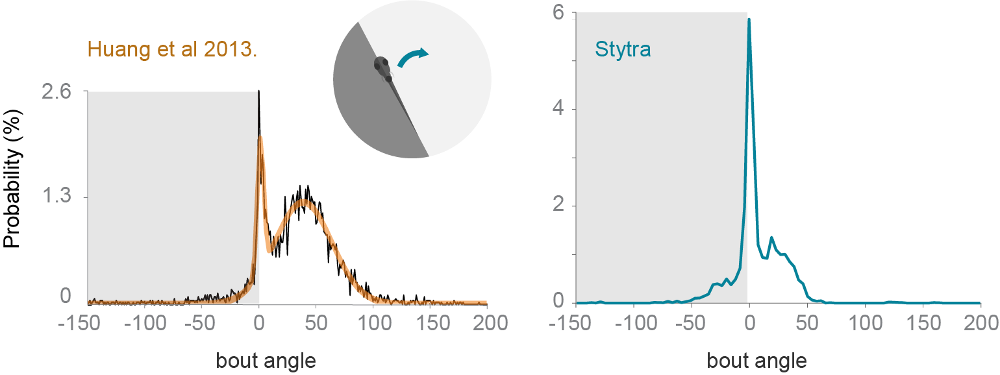

Experiment replication¶
One of the main strengths of Stytra is the possibility of sharing the experimental paradigms described in a publication as scripts that can be run on different platforms and experimental hardware. To prove the validity of this approach, we decided to showcase the software reproducing the results from two publications that investigated different behaviors of the larval zebrafish. This allowed us to verify the performance of our package in producing and monitoring reliable behavioral responses, and showed how the Stytra platform can be used to share the code underlying an experimental paradigm. The scripts used for designing these experiments are available in our repository, together with a full list of parts and description of the hardware. In this way, everyone can independently replicate the experiments simply by installing and running Stytra on a suitable behavioral setup.
Closed-loop motor adaptation¶
To demonstrate the effectiveness of the closed-loop stimulation software for head-restrained larvae, we re-implemented in Stytra one of the paradigms described in [PE11]. This paper addresses the importance of instantaneous visual feedback in the control of the optomotor response in seven dpf zebrafish larvae.
In [PE11], a closed-loop paradigm was used to have real-time control over the visual feedback that the animal receives upon swimming. After triggering motor activity with forward-moving black and white gratings (10 mm/s, 0.1 cycles/mm), online tail tracking was used to estimate the expected velocity of the fish based on freely-moving observations, and a backward velocity proportional to the expected forward velocity was imposed over the forward grating speed. In one crucial experiment (Fig 3 of [PE11]) the authors demonstrated that reducing or increasing the magnitude of this velocity by a factor of 1.5 (high gain) or 0.5 (low gain) resulted in modifications of the bout parameters such as bout length and inter-bout interval (time between two consecutive bouts). The figure below shows the inter-bout interval along the protocol, where the three gain conditions were presented in a sequence that tested all possible gain transitions. When the gain increased the fish was consistently swimming less (higher inter-bout interval), while the opposite was observed when the gain decreased. Therefore, as expected, fish adapted the swimming parameters to compensate for changes in visual feedback. The line represents the average normalized inter-bout time, and bars represent standard error of the mean from n=28 larvae. Here is the figure adapted fron adapted from [PE11]).
{kind=link}
We reproduced exactly the same protocol within Stytra, and we used Stytra modules for closed-loop control of a visual stimulus to compare whether it could replicate the findings from [PE11]. The cumulative angle of the extracted tail segments was used with a gain factor to estimate the fish velocity and the gain factor was changed in a sequence matching the protocol in [PE11]. The replication with Stytra yielded the same result: inter-bout interval decreased in low gain conditions and increased in high gain conditions. Here are plotted average and individual fish (n=24 larvae):
Closed-loop phototaxis assay¶
To test the freely swimming closed-loop performance, we replicated a protocol from [HADE13]. The fish is induced to perform phototaxis by keeping half of its visual field (the left or the right side) bright while the other is dark. The fish is more likely to turn to the bright side. The stimulus is constantly updated so that the light-dark boundary is always along the mid-line of the fish. We replicated the qualitative trends observed in [HADE13], however the ratios of forward swims to turns are notably different (figure below). The variability of fish responses and differences in the stimulus presentation setup (e.g. projector brightness) could account for these differences. Also, to reduce duration of the experiments, we included a radially-inward moving stimulus that brings the fish back into the field of view.
Comparison of turning angle distribution in a closed-loop freely-swimming phototaxis experiment. Left: a histogram of the angle turned per bout, redrawn from [HADE13]. Right: the equivalent panel, with n=10 fish and the protocol run with Stytra. The dark shading on the plot represents the dark side of the visual field.